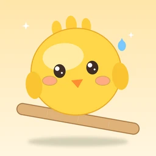
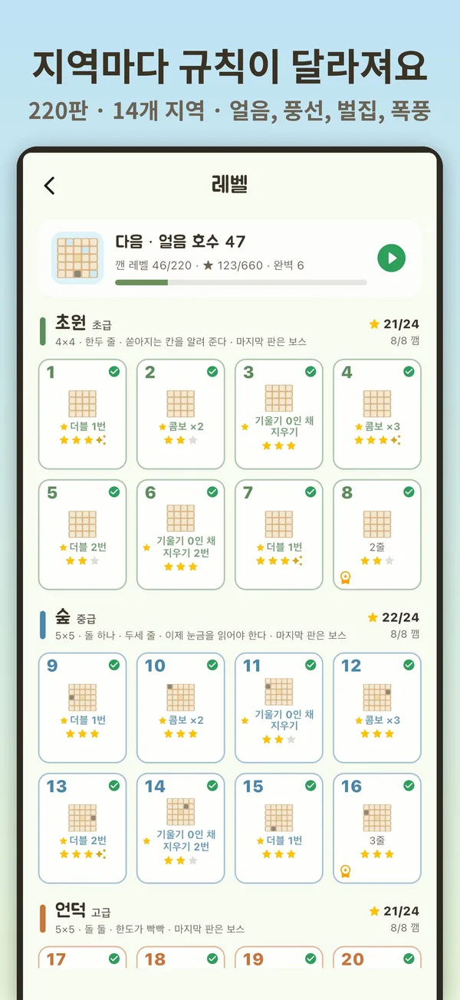
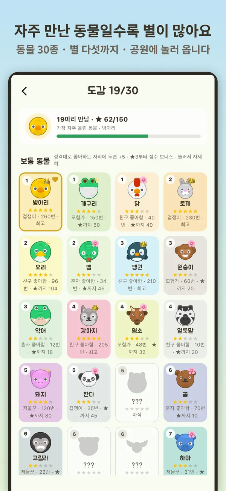
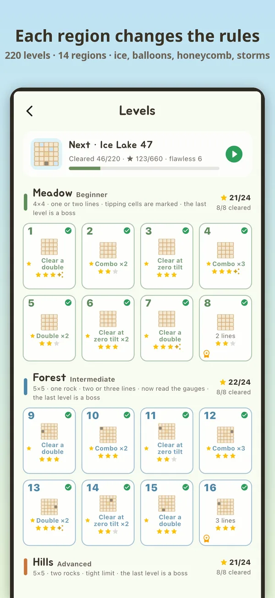
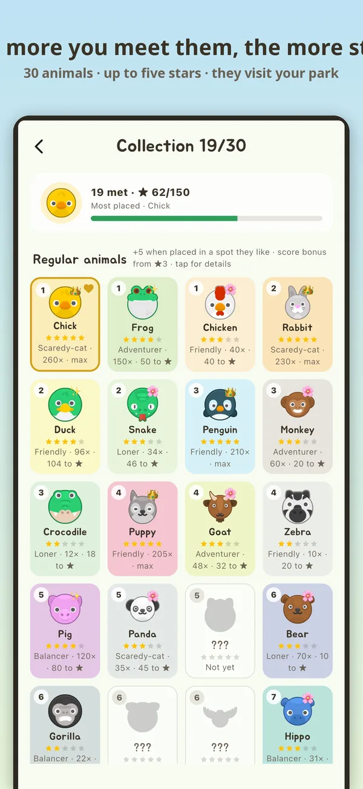
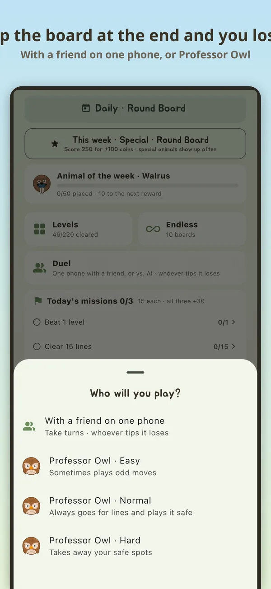
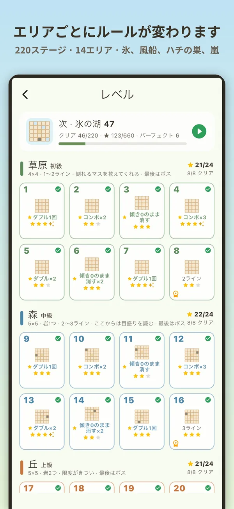
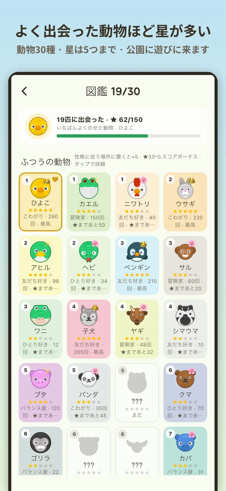
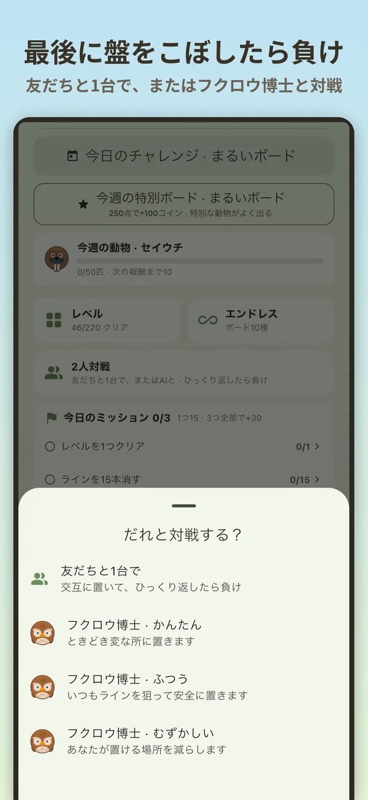

한쪽으로 기울면
전부 쏟아져요
Tip too far
and everything slides off
傾きすぎたら
ぜんぶ落ちちゃう
시소 같은 판 위에 동물을 올립니다. 무거운 동물일수록 세게 누르고, 가로·세로 한 줄을 채우면 사라집니다. 지운 쪽이 가벼워지면 판은 반대로 기울죠. 그 한 수 뒤까지 읽는 것이 이 퍼즐의 전부입니다. Place animals on a seesaw board. Heavier animals push harder, and a full row or column clears. Once that weight is gone, the board tilts the other way. Reading one move ahead is the whole game. シーソーのようなボードにどうぶつを乗せます。重いどうぶつほど強く押し、縦か横のラインを埋めると消えます。消えた側が軽くなると、ボードは反対へ傾きます。その一手先まで読むのが、このパズルのすべてです。

무료 · 광고 포함 · 앱 내 구매(선택) · 5개 언어 Free · Contains ads · Optional in-app purchase · 5 languages 無料・広告あり・アプリ内課金（任意）・5言語
지역마다 새 규칙이 하나씩Every region adds one new ruleエリアごとに新しいルールがひとつ
얼음 칸은 미끄러지고, 금 간 칸은 깨지고, 받침점이 옮겨집니다. 초급부터 폭풍 호수까지 220판이 이어집니다.Ice cells slide, cracked cells break, the pivot moves. 220 levels run from Beginner to Storm Lake.氷のマスはすべり、ひびの入ったマスは割れ、支点が動きます。初級から嵐の湖まで220レベルが続きます。
공원, 판, 지역, 도감, 대결Park, board, regions, collection and duels公園、ボード、エリア、図鑑、対戦
옆으로 넘겨 실제 화면을 보세요.Swipe through the actual screens.横にスクロールして実際の画面をご覧ください。








레벨부터 친구와의 대결까지From levels to duels with a friendレベルから友だちとの対戦まで
14개 지역 220판을 차례로 깹니다.Clear 220 levels across 14 regions.14エリア・220レベルを順にクリアします。
판 10개 중 하나를 골라 쏟아질 때까지 계속합니다.Pick one of 10 boards and keep going until it spills.10種のボードから選び、落ちるまで続けます。
요일마다 다른 판이 나옵니다.A different board for each day of the week.曜日ごとに違うボードが出ます。
딱 한 수로 판을 지켜야 하는 문제입니다.Find the single move that saves the board.たった一手でボードを守る問題です。
60초 안에 줄을 최대한 많이 지웁니다.Clear as many lines as you can in 60 seconds.60秒でできるだけ多くのラインを消します。
친구와 한 폰으로, 또는 올빼미 박사와 겨룹니다. 마지막에 판을 쏟으면 집니다.Play a friend on one phone, or Professor Owl. Whoever spills the board loses.1台で友だちと、またはフクロウ博士と対戦。最後にボードを落とした方の負けです。
동물을 모으고 공원을 키우세요Collect animals, grow your parkどうぶつを集めて公園を育てよう
무게마다 다른 동물Every weight, its own animals重さごとに違うどうぶつ
병아리부터 코끼리까지 무게마다 세 마리. 나무늘보는 줄이 지워져도 한 번은 남고, 앵무새는 반대편으로 날아가고, 올빼미는 판이 가장 평평해지는 무게가 됩니다.Three animals per weight, chick to elephant. The sloth stays one extra turn, the parrot flies to the far side, and the owl becomes whatever weight balances the board.ひよこからゾウまで、重さごとに3匹。ナマケモノはラインが消えても一度だけ残り、オウムは反対側へ飛び、フクロウはボードがいちばん平らになる重さに変わります。
별을 모으면 공원으로Stars bring them to your park星が集まれば公園へ
같은 동물을 자주 올리면 별이 차고, 별 다섯이면 공원에 놀러 옵니다. 도감 30종을 채워 보세요.Place an animal often and it earns stars; with five stars it moves into your park. Fill the 30-animal collection.同じどうぶつをよく乗せると星がたまり、星5つで公園に遊びに来ます。図鑑30種を集めましょう。
힌트와 기울기 안경Hints and Tilt Glassesヒントと傾きメガネ
코인으로 힌트 꾸러미와 기울기 안경을 사서 막힌 판을 넘깁니다. 무르기도 있습니다.Spend coins on Hint Packs and Tilt Glasses to get past a tough board. You can undo, too.コインでヒントパックや傾きメガネを買って、詰まったボードを乗り越えます。やり直しもできます。
출석 선물과 미션Daily gifts and missions毎日のプレゼントとミッション
매일 출석 선물을 받고, 오늘의 미션과 이번 주 특별 판으로 코인을 모읍니다.Claim a gift every day, and earn coins from daily missions and the weekly special board.毎日プレゼントを受け取り、今日のミッションや今週の特別ボードでコインを集めます。
조련사 등급과 주간 기록Keeper ranks and weekly records飼育員ランクと週間記録
조련사 등급을 올리고, 이번 주 기록을 지난주와 견줍니다. 업적은 33개입니다.Climb the Keeper ranks and compare this week with last week. 33 achievements to earn.飼育員ランクを上げ、今週の記録を先週と比べます。実績は33個です。
배경 테마와 판 재질Themes and board materials背景テーマとボードの素材
모은 코인으로 배경 테마와 판 재질을 바꿔 나만의 동물나라를 꾸밉니다.Use your coins to change background themes and board materials.集めたコインで背景テーマやボードの素材を変えられます。
자주 묻는 질문Questionsよくある質問
무료인가요?Is it free?無料ですか？
네. 모든 판과 놀이를 무료로 즐길 수 있고 광고로 운영됩니다(화면 아래 배너, 판 사이 전면 광고, 원할 때만 보는 보상형 광고). 코인으로 며칠 동안 광고를 끌 수 있고, 광고 제거(무기한)를 따로 구입할 수도 있습니다.Yes. Every level and mode is free and supported by ads (a banner at the bottom, full-screen ads between games, and optional rewarded ads). You can turn ads off for a few days with coins, or buy Remove Ads (no expiry).はい。すべてのレベルと遊び方を無料で楽しめ、広告で運営しています（画面下のバナー、プレイの合間の全画面広告、自分で選んで見るリワード広告）。コインで数日間広告を消せるほか、広告削除（無期限）を購入することもできます。
계정이 필요한가요?Do I need an account?アカウントは必要ですか？
아니요. 회원가입이나 로그인 없이 바로 플레이합니다. 진행 상황은 기기에 저장됩니다.No. There's no sign-up or login; your progress is stored on your device.いいえ。会員登録やログインなしですぐに遊べます。進み具合は端末に保存されます。
어떤 언어를 지원하나요?Which languages does it support?対応言語は？
한국어, 영어, 일본어, 스페인어, 중국어(번체) 5개 언어를 지원합니다.Five: English, Korean, Japanese, Spanish and Traditional Chinese.日本語、英語、韓国語、スペイン語、中国語（繁体字）の5言語に対応しています。
안드로이드에서도 쓸 수 있나요?Is it on Android?Androidでも使えますか？
현재는 앱스토어에서만 받을 수 있습니다. 아이폰과 아이패드를 지원합니다.Not yet. It's on the App Store for iPhone and iPad.現在は App Store でのみ配信しています。iPhone と iPad に対応しています。
자꾸 쏟아져요.My board keeps spilling.すぐに落ちてしまいます。
무거운 동물은 받침점 가까이에 두고, 줄을 지우기 전에 지운 뒤 어느 쪽이 가벼워질지 먼저 보세요. 기울기 안경을 쓰면 놓았을 때 쏟아지는 칸이 붉게 보입니다.Keep heavy animals close to the pivot, and before you clear a line, check which side will get lighter. With Tilt Glasses on, cells that would tip the board turn red.重いどうぶつは支点の近くに置き、ラインを消す前に、消したあとどちらが軽くなるかを先に見ましょう。傾きメガネをかけると、置くとひっくり返るマスが赤く表示されます。
첫 동물을 올려 보세요Place your first animal最初のどうぶつを乗せてみよう
무료로 설치하고 초급 1판부터 시작하세요.Free to install. Start with Beginner, level one.無料でインストールして、初級の1レベルから始めましょう。